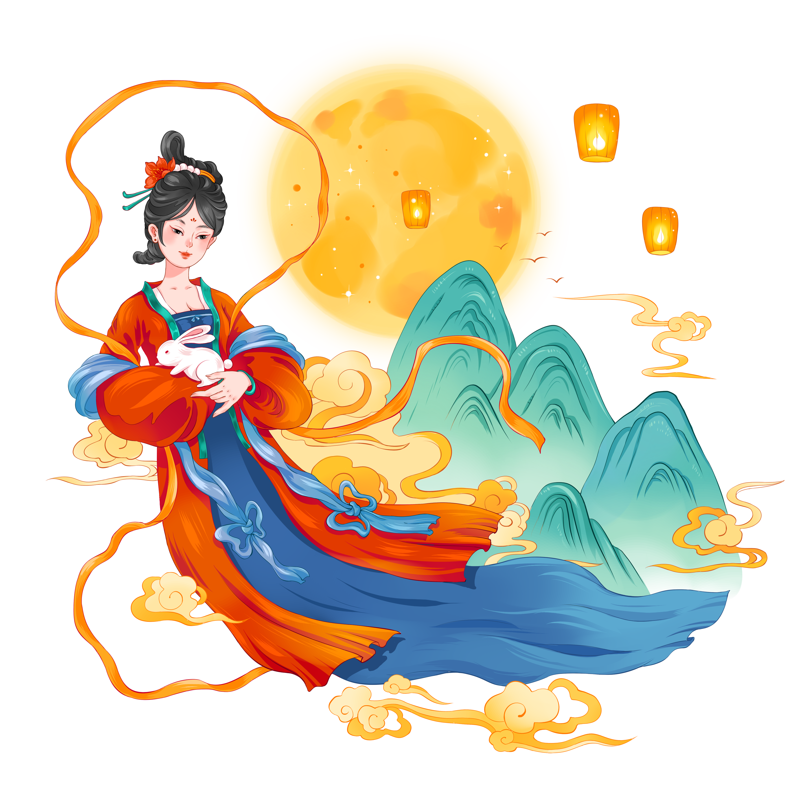
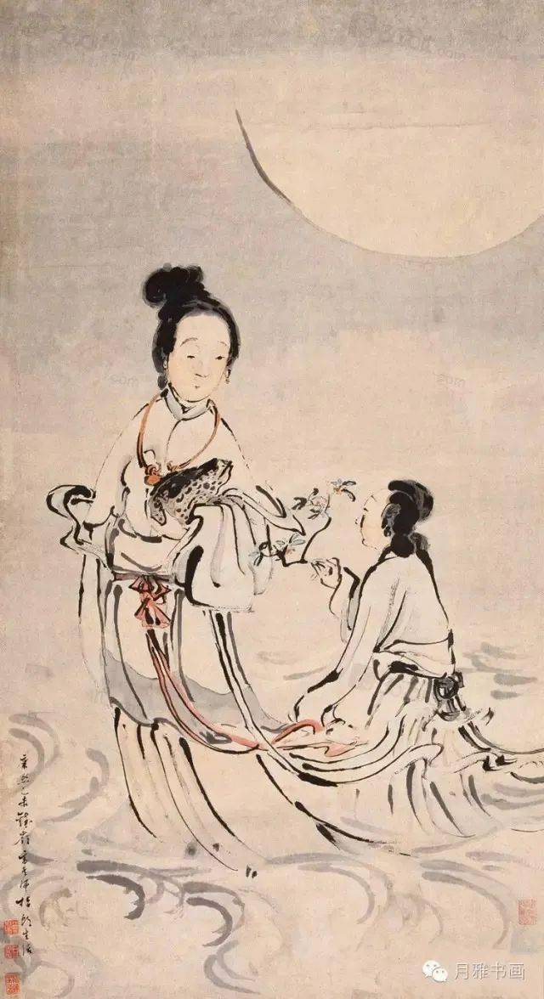

中秋节
中秋节，又称月圆节、团圆节，是中国传统的重要节日之一，时间定在农历八月十五。中秋节是中国传统节日中最具代表性和浪漫色彩的节日之一，也被列入联合国非物质文化遗产名录。下面为您介绍中秋节的由来、涵义、习俗，以及与之相关的文学和文化内涵。
中秋节起源于古代祭月活动，最早可以追溯到周朝，后来逐渐演变成为中秋节这一团圆的节日。传统上，中秋节是为了感谢丰收和祈求团圆幸福而设立的。月亮在这一天也因为最圆最亮而备受赞美，象征着团圆和祥和。
中秋节的一个重要传说是关于嫦娥奔月的故事，故事讲述了嫦娥飞升到月宫，并成为月宫仙子的传奇。中秋节也因此与嫦娥、玉兔、桂花等元素紧密联系在一起。
中秋节的传统习俗主要包括：
中秋节在中国文学中有着重要的地位，许多文人墨客都创作了关于中秋节的诗歌、歌赋和散文，其中最著名的莫过于《静夜思》和《水调歌头》等作品。这些作品不仅赞美了月亮的明丽和人们团圆的愿望，也反映了中国古代文人对自然、情感、人生的深刻思考。 中秋节同时还承载着丰富的文化内涵，象征着人们对家庭团圆、美好生活和祥和社会的向往。团圆、感恩、祈福是中秋节传统的价值观，这些价值观也体现了中华民族在历史长河中对美好生活的追求。 总之，中秋节作为中国传统的重要节日，不仅承载着丰富的历史文化内涵，也体现了人们对美好生活和团圆幸福的向往。通过赏月、吃月饼、赋诗等传统活动，中秋节成为了一个家庭团聚、感恩亲情、祈福祥和的重要时刻，也展示了中国传统文化中对人情、自然、生活的独特理解和追求。
水调歌头
（宋 苏轼）
明月几时有，把酒问青天。不知天上宫阙，今夕是何年。我欲乘风归去，又恐琼楼玉宇，高处不胜寒。起舞弄清影，何似在人间。
转朱阁，低绮户，照无眠。不应有恨，何事长向别时圆？人有悲欢离合，月有阴晴圆缺，此事古难全。但愿人长久，千里共婵娟。
科举时代，考取功名又被称之为“蟾宫折桂”，蟾宫即月宫，攀折月宫桂花意指登科及第。这个典故出自西晋时的邯诜，当年他被举为贤良，对策为第一名，晋武帝就让他自我评价， 他说：“我就像月宫里的一段桂枝，昆仑山上的一块宝玉。”后来人们就常用广寒宫的桂枝来形容特别出众的人才，这便是“蟾宫折桂”的出处。唐代以后，随着科举制度的盛行，蟾宫折桂便被用来比喻考中进士。
